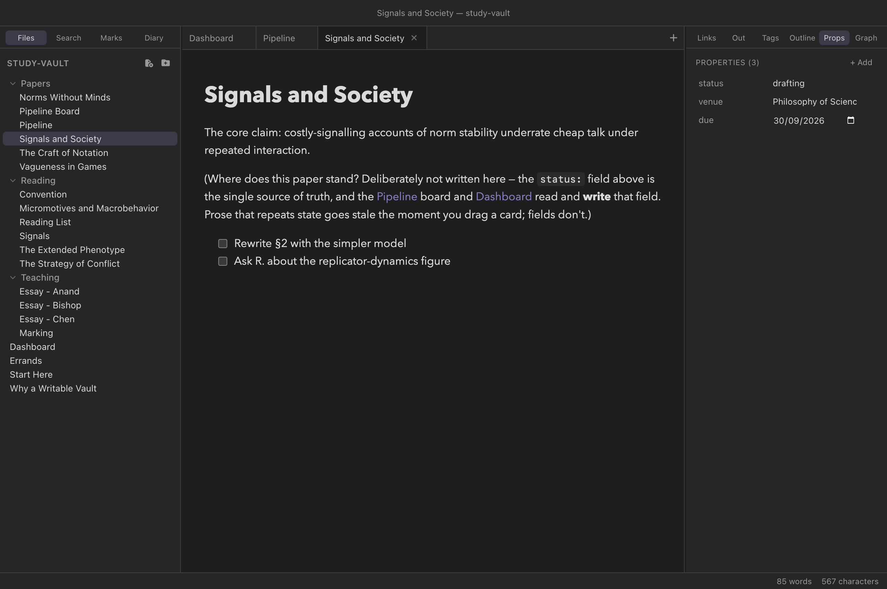

Writing
Properties and metadata
A note is prose, but it usually knows a few facts about itself: this
paper is submitted, that book is by David Lewis and
rated 9, this essay is not yet marked. Clew gives
those facts one plain-text home — a frontmatter block
at the top of the note — and a typed panel for editing them. Everything
here is what the query system reads, and what
editable query cells, kanban boards, and the properties panel write.
(Dataview's inline Key:: value fields are deliberately not
a second home: see why.)
The frontmatter block
Frontmatter is a block of key: value lines fenced by
---, sitting at the very top of the file — it must begin
at the first character of the note, or it is just a horizontal rule.
Here is a real note from the study-vault example vault:
You write
---
status: submitted
venue: Synthese
due: 2026-09-15
---
# Norms Without Minds
Under review. Referee window closes mid-September; the due date above
is when to nudge the editor.
The block does not render in reading mode — it is metadata, not
content. What it does instead is feed everything else: the properties
panel shows it as editable rows, the vault index reads tags
and aliases out of it, and every status:,
due:, and rating: becomes a column a query
can tabulate, filter, and write back to.
Value types
Clew reads and writes a deliberate subset of YAML. Within that subset, values are typed:
- Strings
venue: Synthese. Quotes are optional; use them when the text would otherwise read as another type —version: "1.0"stays the string1.0rather than becoming the number. Both"double"and'single'quotes work. Inside double quotes YAML's escapes apply —\nis a line break,\ta tab,\"a quote and\\a backslash — while single quotes take the text as written.- Numbers
priority: 2,rating: 4.5. Integers and decimals, negative numbers included. Numbers sort and compare numerically in queries.- Booleans
reviewed: true,marked: false. The bare wordstrueandfalse, nothing else.- Empty
draft:with nothing after the colon is a null value — the property exists but holds nothing yet.- Lists
- Two equivalent spellings: inline,
tags: [guide, properties], or block form, one- itemline per entry. List items are themselves typed scalars. - Dates
- There is no separate date type — a date is a string in ISO form,
due: 2026-09-15. That convention is what makes dates work everywhere: ISO dates compare correctly as text, so query date arithmetic works, and the properties panel recognises the shape and offers a native date picker.
You write
---
status: published
reviewed: true
priority: 2
tags:
- guide
- properties
aliases:
- Frontmatter
---That is the frontmatter of the demo vault's own Properties guide note: a string, a boolean, a number, and two block lists.
The properties panel
Open the Props tab in the right sidebar and the active note's frontmatter appears as key/value rows. The panel is typed — it looks at each value and picks the right editor:
- Booleans get a checkbox.
- Lists become chips, with a trailing input for adding items.
- ISO dates (
2026-09-15) get the native date picker. - Everything else — strings, numbers, empty
values — is a text field. When you commit, the text is re-typed:
42is stored as a number,trueandfalseas booleans, an emptied field as null, anything else as a string.


study-vault paper note:
each frontmatter key is an editable, typed row.The panel is a full editor, not just a viewer:
- + Add creates a new property with a placeholder key and focuses it so you can name it at once.
- The × that appears on a row removes that property.
- Rename a key by editing it in place; press Enter or click away to commit. Keys must start with a letter, digit, or underscore and may contain word characters, spaces, dots, slashes, and hyphens — an invalid rename snaps back.
- For list properties, type in the trailing field and press Enter to add a chip; Backspace in the empty field removes the last one; each chip has its own ×.
Editing the block directly
The panel and the text block are two views of the same lines. You can always edit the YAML directly in the editor — add a key, reorder properties, paste a block from another note — and the panel follows your keystrokes. Working in the other direction, when you commit an edit through the panel Clew rewrites the whole block in a canonical form:
- Key order is preserved.
- Lists are written in block form (one
- itemper line); an empty list is written inline as[]. - Strings are quoted only when they need to be — when they would
otherwise parse as a number or boolean, start or end with a space,
begin like a list item, or contain characters YAML could misread. A
value holding a line break or a tab is written double-quoted, the
break as
\n:body: "one\ntwo". - Removing the last property removes the
---fences entirely; adding a property to a note without frontmatter creates the block.
A deliberate subset — and the safety valve
YAML at large is a big language: nested mappings, anchors and aliases, multi-line block scalars, comments, flow maps. Clew's parser deliberately covers only the flat subset described above, because that is the shape of note properties — and because a parser that half-understands a construct and then rewrites the block is how metadata gets destroyed.
So the parser carries a safety valve. When a frontmatter block contains
anything outside the subset — a nested mapping, a flow map like
{a: 1}, an anchor (&name) or alias
(*name), a block scalar (| or
>), or a comment — Clew flags the whole block as
outside the editable subset and refuses to rewrite it:
- The properties panel shows the rows it could read, but read-only, with a note explaining why.
- Editable query cells and kanban drags that would write into that note's frontmatter refuse, with a notice, instead of writing.
- The block itself passes through Clew byte-for-byte, untouched.
Why there are no inline fields
Dataview lets a fact live in the body of a note as an
inline field: Rating:: 8 on a line of
its own, or [chapter:: 5] in the middle of a sentence.
Clew does not read either form, and the reason is the dialect: in
jmarkdown, Term:: definition is a description
list — a term, then its definition on the same line or
indented beneath it (see the dialect). The
same line cannot be both a definition and a datum, and description
lists are the older and the more useful of the two, so they won.
You write
Rating:: 8
The relevant argument is in [chapter:: 5], which repays a slow read.You get
A description list whose term is Rating and whose
definition is 8 — and, from the second line, another entry
whose term is The relevant argument is in [chapter and whose
definition is 5], which repays a slow read. The sentence is
gone, because :: made everything before it the term.
So a bracketed field in prose is not merely ignored: it takes the sentence around it with it. Keep such facts in frontmatter, where the properties panel, every query cell and every kanban board can read and edit them. A vault arriving from Obsidian with inline fields renders them as description lists — on purpose, and visibly — rather than reading some and losing others; it is one of the compatibility lines Clew draws by name.
Tags, aliases, and the index
Two frontmatter keys are special because the vault index reads them:
tags— a list of tags, written without the#. These make the note show up in the tag pane and answertag:filters in queries. Tags also work inline in the body as#hashtags(including nested ones like#project/clew; a pure number such as#123is not a tag, matching Obsidian's rule).aliases— alternative names for the note. An alias makes[[Frontmatter]]resolve to a note actually called Properties, and the quick switcher finds notes by alias as well as by name. See Links and embeds.
From metadata to database
Properties are the raw material of Clew's
vault database. Every key becomes a field
that a query fence can tabulate, filter, sort, and group
on; a kanban board's columns are
the values of one chosen field; and because query tables are
editable, the flow runs both ways — retype a cell and Clew
writes the new value into that note's frontmatter, using exactly the
machinery described in this chapter, safety valve included.
Widgets in prose (Meta Bind)
The same write path has one more front end: the Meta Bind plugin's
input widgets, rendered as
Web Awesome components (MIT,
bundled and self-hosted, loaded lazily only when a note carries one).
INPUT[toggle:done] in a sentence renders a live switch
two-way bound to the note's done property;
INPUT[slider(minValue(0), maxValue(10)):rating] is a
slider; INPUT[inlineSelect(option(draft), option(review)):status]
a dropdown; text, textArea,
number, datePicker and time
inputs work too; progressBar renders as a bound read-only
bar; and a binding can reach another note —
INPUT[toggle:[[Groceries]]#done]. Two input types are
Clew-native additions (Obsidian's plugin will show its
unknown-type error for them): rating — star ratings, with
stepSize(0.5) for half stars — and color, a
color swatch bound to a hex-string property.
VIEW[{rating}] displays a bound value inline, and grows
Clew-native formatter kinds: VIEW[relativeTime:{due}]
("in 3 weeks"), formatDate, formatNumber,
formatBytes, badge, and qr,
which renders a bound URL as a scannable QR code. Flip a widget and the
property changes in the file — same machinery as editable query cells,
safety valve included — and every other view of that field follows on
the next render. Remaining input types, VIEW expressions,
and the plugin's button system are refused by name; in a website export
the widgets render disabled, because a static page has no write path.
A text or number field saves when you press
Enter or move away from it; a textArea keeps
Enter for new lines and saves when you move away, its line
breaks stored as \n in a quoted value
(above).
A widget also honours Meta Bind's class(…) argument:
INPUT[number(class(narrow)):mark] adds your class to the
rendered control, so a vault script can
style or resize an individual widget — the escape hatch for the rare
case where the default sizing is not what a note wants.
A value that must not change by accident — a grade, a signed-off date —
takes Clew's locked argument:
INPUT[number(locked):grade] shows its value but ignores
clicks and typing until you press the padlock beside it. It locks again
once the edit is saved, when you move away from it, and whenever the
note re-renders; nothing is stored, so a locked widget
always starts locked. Every input that holds a value takes it
(progressBar is read-only already), and the padlock is a
button you can reach and press from the keyboard. In Obsidian, Meta Bind
skips an argument it does not know, so the note still works there,
unlocked; a website export draws no padlock, since its widgets are
disabled anyway.
Widgets can also bind to text, not only metadata —
a Clew-native extension. Give a block a
block reference marker and bind a text
widget to it: INPUT[text:^motto] holds the text of the
block ^motto names, and typing in the widget rewrites that
exact block in the file, marker preserved. The widget holds the
marker's line verbatim, so plain paragraphs are the natural targets;
only text and textArea bind to blocks, values
stay one block, and a marker inside a code fence is never a target.
The demo vault's Widgets guide note has every control live.
--- block, the same tags and
aliases conventions, so Obsidian's property editor and
Clew's panel edit the same data interchangeably. Clew's canonical
rewrite stays inside plain YAML that Obsidian reads without
complaint. Inline Key:: value fields are the Dataview
plugin's convention, and Clew does not read them: in this dialect
they are description lists (above).
Reference
| You write | Stored as | Panel editor |
|---|---|---|
venue: Synthese | string | text field |
version: "1.0" | string (quotes keep the type) | text field |
priority: 2 · rating: 4.5 | number | text field, re-typed on commit |
reviewed: true | boolean | checkbox |
draft: | null (empty) | empty text field |
tags: [a, b] | list (inline form) | chips |
tags: then - a lines | list (block form) | chips |
due: 2026-09-15 | string in ISO date form | date picker |
Key:: value in the body, own line or bracketed | not data: a description list (the dialect's Term:: definition) | — |
Nested maps, {…}, &/*, |/>, comments | outside the subset | read-only; Clew never rewrites the block |
See also
- Queries — tabulating, filtering, and editing this metadata across the vault.
- Tasks and kanban — boards whose columns are a frontmatter field's values.
- Links and embeds — how aliases affect wikilink resolution.
- Panels — the sidebar the Props tab lives in.
- The editor — undo, auto-save, and how panel edits flow through an open editor.